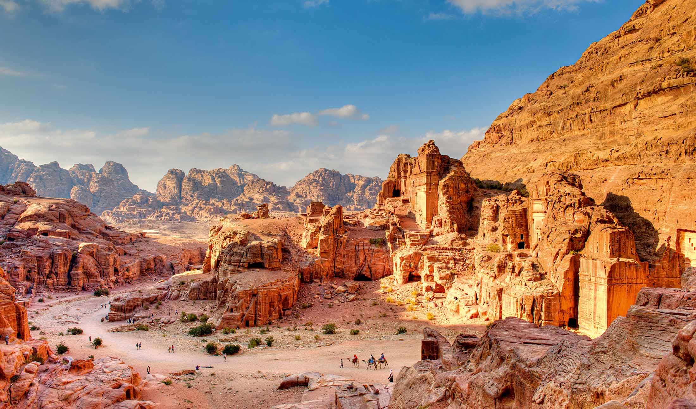
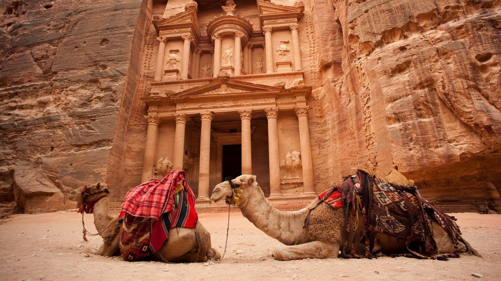
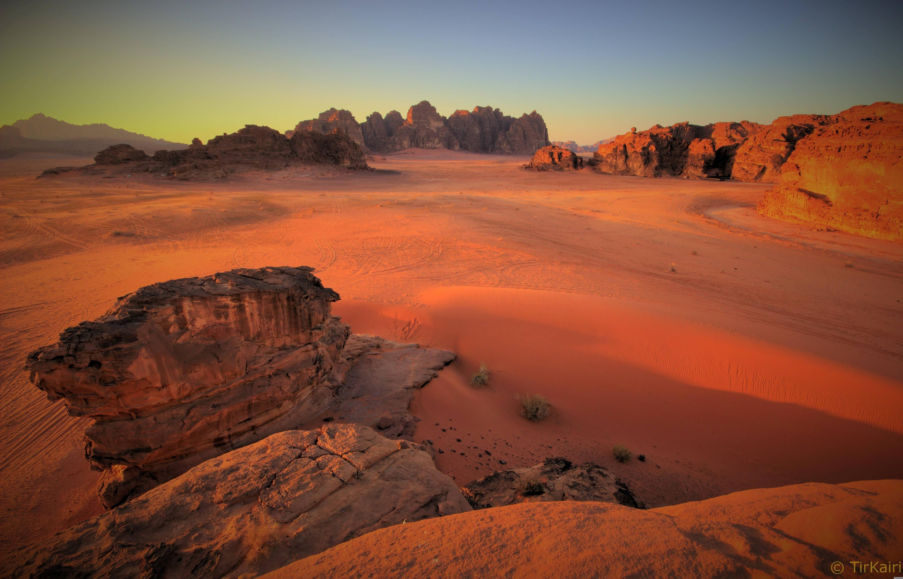

أبرز المواقع الأثرية في الأردن
-
جرش
عاصمة الورد الصخري، مدينة منحوتة في الصخور تُظهر عبقرية الحضارة النبطية.
-
آثار عمان

تقدم لمحة عن الحياة القديمة في العاصمة وتاريخها الغني.
-
آثار البترا

مدينة البترا الشهيرة بمنحوتاتها الصخرية وتاريخها العريق.
-
آثار البترا 2
قلعة الكرك التاريخية التي تشهد على فترات طويلة من الصمود والتاريخ.
-
المدرج الروماني
منشأة رومانية تُظهر براعة الهندسة المعمارية القديمة.